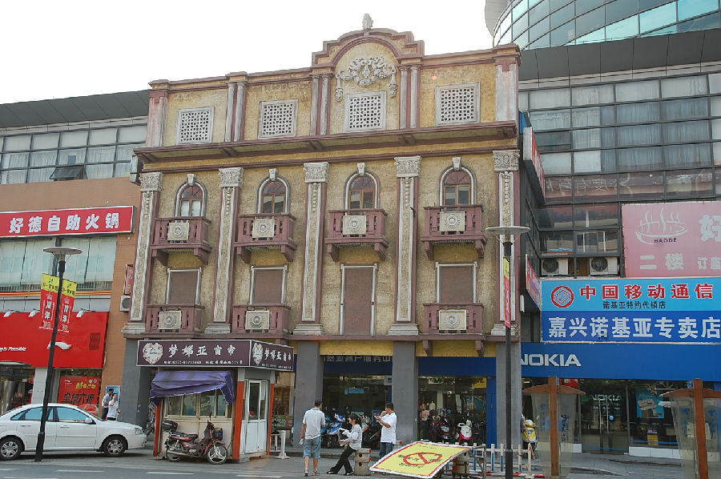

嘉兴市文物保护网 · 市级文物保护点 · 2020-11-09 · 原文

正春和布店门坊位于嘉兴市南湖区建设街道瓶山社区建国南路636号商铺前，布店创建于民国初年，为合股企业，原名“振春和”，不久改用现名。解放前即为市区声名卓著的老字号绸布店。1955年实行公私合营，60年代改称第二纺织品商店。1986年恢复老店号。1988～1990年实行承包经营责任制。1988年，省政府授予“省级先进企业”称号，1990年被评为省级“创三优”先进企业。2000年，因建国路改造，布店主体被拆除，现仅余临街门墙立面，形同牌坊，故重新定名为“正春和布店门坊”，门坊为砖混结构，立面保留原装饰和门窗外观，门窗眉为拱形，属巴洛克建筑风格。此类历史建筑在旧城改造中消失迅速，特有的保存形式，虽不能完全反映原貌，但给市民留下了一条追忆历史的特有途径，其建筑的特有美感也反映了民国时期中西文化交流的事实，因而具有较高的历史和艺术价值。2002年公布为嘉兴市文物保护点。